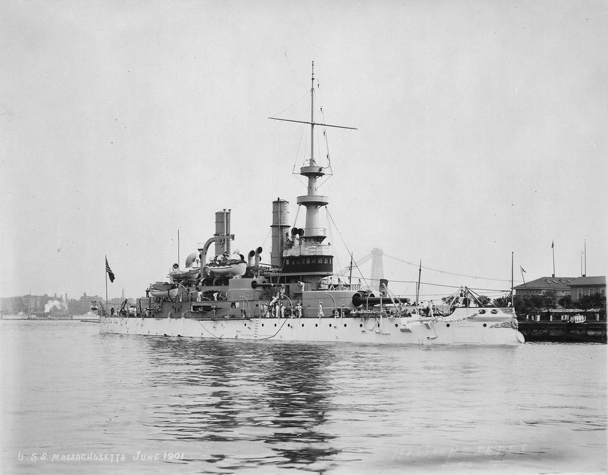
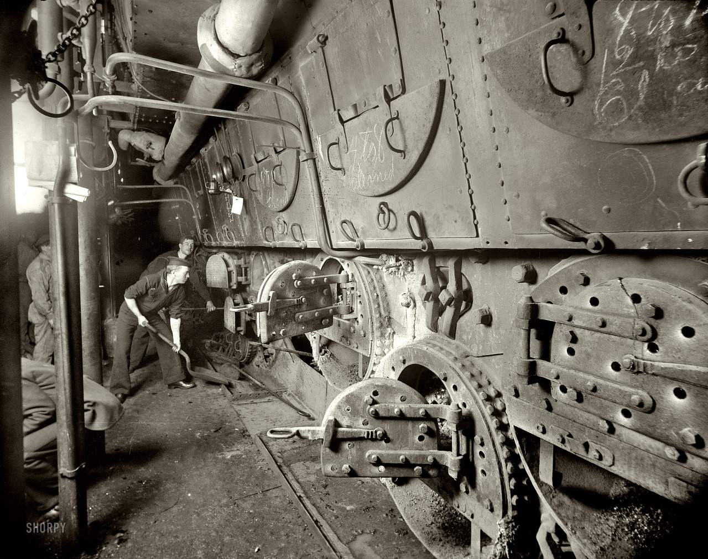
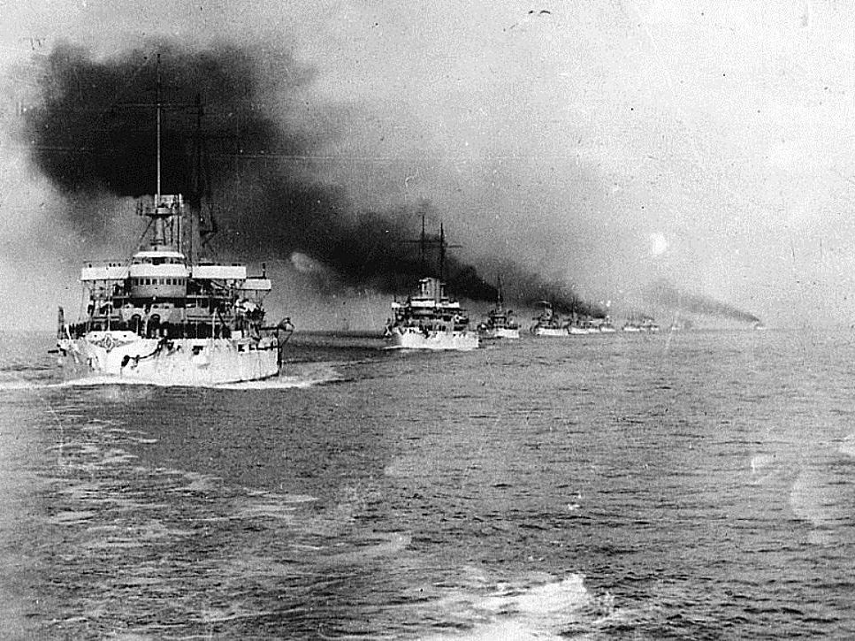
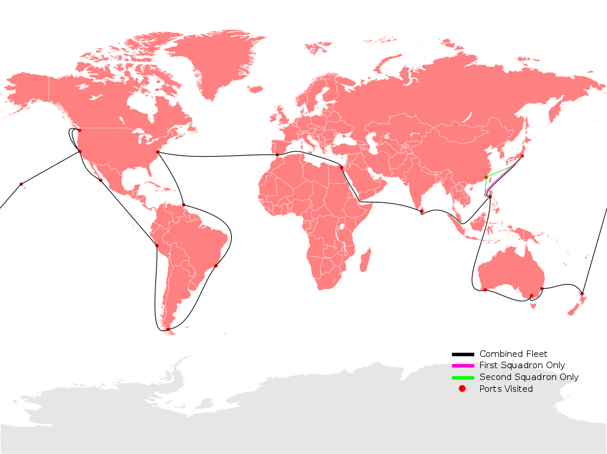
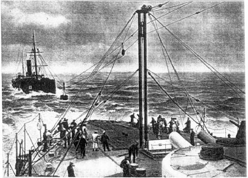
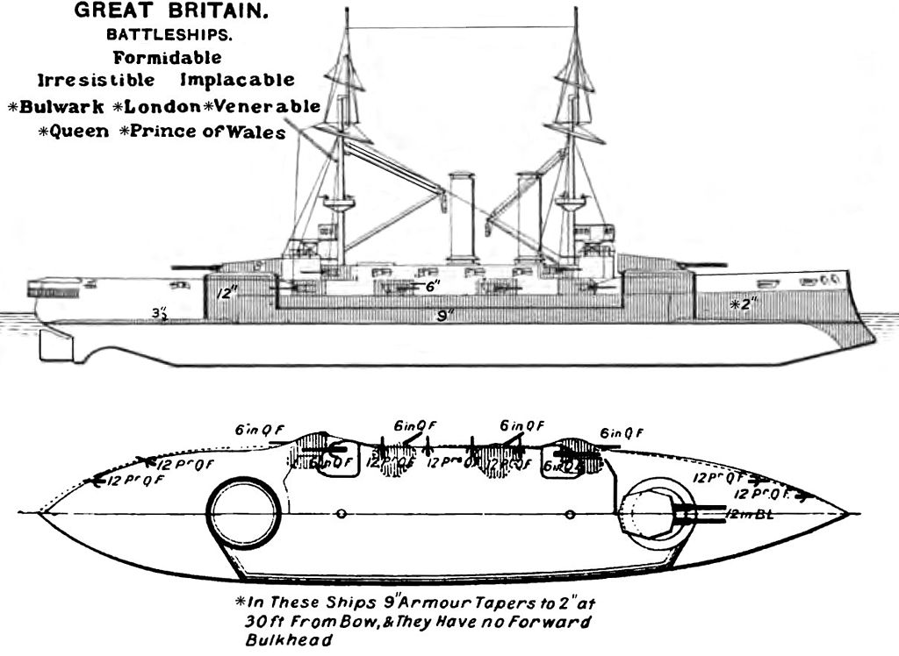
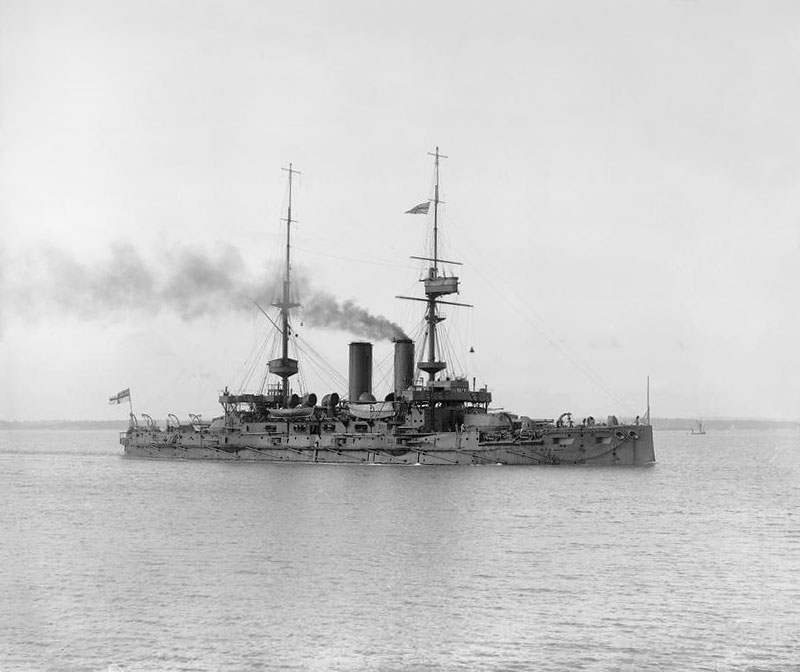
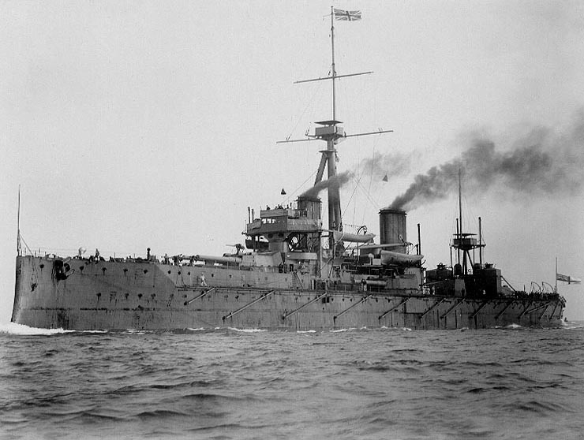
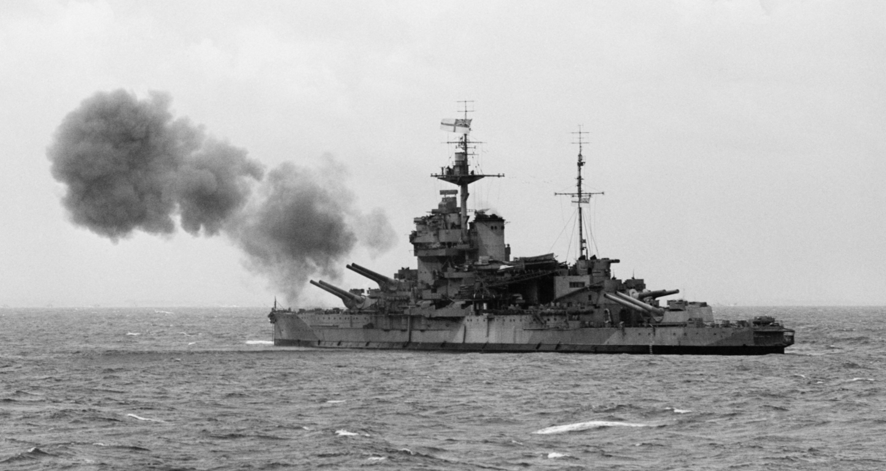

문무대왕함 집단 감염 사태를 계기로 본 해상 보급의 짧은 역사 (2)
게시: 2021-08-05T06:30:08+09:00
1883년 당시 29세이던 로우리(Robert Swinburne Lowry)가 당시 영국 육해군의 씽크 탱크라고 할 수 있는 왕립 육해군 합동 연구소(Royal United Services Institute)에 제출한 논문에서 주장한 바는 꽤 신선한 것이었습니다. 보급 받는 군함과 보급함이 정박 상태가 아니라 약 5노트의 저속으로 항행하면서 두 군함 사이에 연결된 케이블을 통해 방수통에 넣은 석탄을 연속적으로 전달받도록 하자는 것이었습니다. 로우리는 이 방법을 통해 시간당 20톤의 석탄 보급이 가능하다고 주장했습니다. 그러나 영국 해군성은 나이 많은 귀족 아재들이 지배하는 고리타분하고 보수적인 집단이라서, 그런 아이디어를 비실용적이라며 퇴짜를 놓았습니다. 그러나 많은 장교들이 보기에 아이디어 자체는 신박한 것일 뿐만 아니라 되기만 하면 해군 작전을 크게 바꿔 놓을 수 있는 매우 중대한 것이기도 했습니다. 로우리 뿐만 아니라 이후 10여년 간 비슷한 제안들이 20여건이나 날아들었습니다. 하지만 해군성의 귀족 아재들이 이 해상 보급 아이디어를 거부한 것이 그냥 꼰대 근성 때문만은 아니었습니다. 당시 선박 기술로는 거친 바다 위에서 두 군함 사이의 간격을 정확하게 유지하는 것이 쉽지 않았던 것입니다. 두 선박을 연결한 케이블이 지나치게 팽팽할 경우, 까딱 하면 두 선박 사이가 벌어져서 케이블이 끊어져 대형 사고가 벌어지고 사람들이 다칠 가능성이 있었고, 케이블이 지나치게 느슨하면 석탄통 전달이 원활할 수가 없었습니다. 게다가, 석탄의 해상 보급이 영국 해군에게는 그렇게까지 절실한 문제는 아니었습니다. 영국은 전세계 곳곳의 식민지와 해군 기지를 통해 촘촘한 석탄 보급망을 가지고 있었기 때문입니다. 그러다 영국 해군성도 가만 있을 수 없는 일이 벌어졌습니다. 1898년, 프랑스 해군이 영국 회사인 Temperley Transporter Company에서 개발한 '템펄리 운반기'라는 이름의 도르레 장치를 이용하여 보급선과 군함이 6노트의 속도로 항행하는 가운데 200톤의 석탄을 해상 보급하는데 성공한 것입니다. 다른 나라도 아니고 하필 프랑스놈들이, 그것도 영국 회사가 만든 장치를 이용하여 성공하다니! 게다가 미국 해군도 1899년에 케이블과 도르레, 후크를 이용한 장치로 해상에서 석탄선 마르셀러스(Marcellus) 호로부터 전함 매서추세츠(USS Massachusetts, BB-2) 호에게 해상에서 석탄을 공급하는 실험을 시작했습니다. 프랑스나 미국은 영국처럼 해외 식민지가 많지 않아서 폭넓은 석탄 보급항 네트워크를 구축할 수 없었기 때문에 더욱 해상 보급 기술이 필요했습니다.
(존 리들리 템펄리(John Ridley Temperley)라는 발명가가 만든 템펄리 운반기입니다. 이건 원래 선박간의 화물 이송을 위해 만든 것은 아니고 그냥 현가식 화물 이송용 크레인 같은 것으로서, 보시다시피 케이블이 아니라 굵은 H빔에 매달린 도르레를 통해 화물을 이동시키게 되어 있습니다. 프랑스 해군도 이 장치를 그대로 활용했을 것 같지는 않고 H빔 대신 케이블을 이용하는 방식으로 뭔가를 개조했겠지요.)

(1893년에 진수된 미국의 2번째 전함인 BB-2, USS Massachusetts입니다. 배수량 1만톤에 15노트의 속력을 냈습니다.)

(USS Massachusetts BB-2의 기관실 모습입니다. 해군은 다 힘들지만 석탄 때는 전함 기관실은 특히 매우 힘들고 덥고 더러웠다고 합니다.)

(16척의 전함을 주축으로 이루어진 미해군 함대가 1907년~1909년에 수행한 세계 일주 훈련이었던 The Great White Fleet의 모습입니다. 백색 함대라고 불린 이유는 당시 미해군의 평화시 색상인 새하얀 색으로 페인트칠 되었기 때문이었습니다. 이 순양 훈련에서도 가장 중요한 사항 중 하나가 식민지가 별로 없던 미국이 이 함대에게 어떻게 석탄을 공급하느냐 하는 것이었습니다. 당시만 해도 미국은 민간 상선단이 충분하지 않아 함대에게 공급할 석탄선을 계약하는 것조차 수월하지 않았습니다. 루스벨트 대통령이 외국 선적 석탄선보다 50% 비싸더라도 미국 선적 석탄선과 계약하겠다고 밝혔음에도, 이 함대의 첫 항해에 필요한 석탄 12만5천톤을 공급할 석탄선 38척 중에 8척을 제외한 30척은 모두 영국 선박이었습니다. 이건 이 세계 일주의 주요 목적 중 하나가 당시 대한해협 해전에서 러시아를 격파하고 강국으로 떠오르던 일본에게 까불지 말라는 경고를 주려 했던 미해군에게 크게 체면이 깎이는 일이었습니다. 당시 일본은 영국과 동맹을 맺고 있어서 유사시 영국은 일본을 돕게 되어 있었기 때문이었습니다.)

(당시 The Great White Fleet의 항로입니다. 이 항해를 가진 가장 큰 목적은 친선 및 미해군의 위력 과시였는데, 그 못지 않게 중요했던 것이 러시아 발틱 함대를 꺾고 기고만장한 일본에게 '미해군이 언제든 태평양으로 진출할 수 있다'는 것을 과시하기 위한 것이었습니다. 당시엔 아직 파나마 운하가 없었고 미 서해안에는 그럴싸한 해군 기지도, 함대도 없었거든요. 필리핀과 하와이를 제외하고는 별다른 기지도 없이 태평양에서 활동해야 했던 미해군이 해상보급에 더 열성적이었던 것은 당연했고, 다음 편에서 다루겠지만 결국 그걸 실용화시킨 것도 미해군이 먼저였습니다.) 그래서 부랴부랴 영국 해군도 미해군의 석탄 해상 보급 실험을 주도한 밀러(Spencer Miller)와 계약하여 해상 보급의 실험에 들어갔습니다. 그러나 영국 해군이 요구한 최소한의 보급 속도는 시간당 40톤이었으나 1901년 실험에서도 그 속도는 시간당 19톤에 불과했습니다. 이 문제를 해결하기 위해 밀러는 프랑스 해군이 사용해보았던 텀펄리 운반기를 만든 템펄리 사와 협업을 했고, 그렇게 만들어진 템펄리-밀러 시스템(Temperley-Miller system)을 이용하여 1902년 마침내 시간당 47톤이라는 성과를 낼 수 있었습니다. 당대 최대 물주인 영국 해군이 관심을 갖자 기술 진보에 확실히 가속도가 붙었습니다. 템즈 철강 조선소(Thames Ironworks and Shipbuilding Company)는 급속 장치(Express equipment)라는 것을 만들어 해군성에 영업을 했습니다. 이 시스템의 특징은 시간당 150톤이라는 검증되지 않은 성능 외에도, 여태까지의 모든 해상 보급이 전통적인 방식에 따라 속도가 빠른 군함이 앞에 서고 느린 보급선이 뒤에서 따라가는 형태였던 것에 비해, 두 선박이 나란히 항행하면서 옆구리를 통해 연결된 케이블로 석탄을 보급한다는 것이었습니다. 이는 좀더 공간이 많은 현측을 통해 작업이 일어나므로 훨씬 작업이 쉽다는 장점이 있었습니다. 뿐만 아니라 멧캘프(Metcalf)라는 영국 엔지니어가 1903년 한 줄이 아닌 두 줄의 케이블과 증기 엔진을 이용한 케이블 장력 조절 장치로 이루어진 더 개선된 시스템을 선보였습니다. 1903년 이루어진 그 테스트에서 10노트의 속력을 내면서도 시간당 54톤의 흡족한 성과를 냈습니다.

(HMS Trafalgar와 석탄선 사이에 이루어진 1902년의 해상 보급 테스트입니다. 이렇게 당시엔 두 선박이 나란히 항행하면서 보급품을 주고 받는 것이 아니라 앞뒤로 항행하면서 보급 작업을 했습니다. 돛대가 부러지거나 엔진이 고장난 선박을 예인하던 방식을 그대로 썼던 것이지요. 그러나 부두에 정박한 선박에 짐을 적재할 때 고물이나 이물을 통해서 하지 않듯이, 당연히 두 선박이 나란히 항행하면서 현측으로 주고받는 것이 훨씬 더 편리했습니다.) 그러나 여전히 영국 해군성은 그런 해상 보급 시스템을 정식으로 도입하지 않았습니다. 아마도 당장 절실한 수요가 없기 때문이기도 했겠지만, 그 사이에 군함들이 더 대형화되고 돛대가 완전히 사라지면서 석탄 소모량이 훨씬 커졌기 때문이기도 했습니다. 가령 이제 전함의 경우 2천톤의 석탄을 적재해야 했는데, 시간당 50톤의 속력으로는 40시간이 걸렸습니다. 해상 보급이 현실화되려면 이젠 훨씬 더 빠른 보급 속도가 필요했습니다. 그러나 아무리 묘안을 짜내봐도, 더 빠른 속도는 기술적으로 어려워 보였습니다.
 
(1899년 진수된 London급 pre-dreadnought 전함인 HMS Bulwark입니다. 만재 배수량 1만8천톤에 18노트의 속도를 냈는데, 최대 2천톤의 석탄을 싣고 대서양 왕복이 가능했습니다.)
이렇게 해상 보급의 꿈은 피어나기도 전에 시드는 듯 했습니다. 그러나 해결책은 전혀 생각하지 못했던 곳에서 나왔습니다. 바로 석유였습니다.
1900년대에 들어서고도 전함들의 주연료는 석탄이었습니다. 이는 1906년 진수되어 전세계 해군을 충격에 몰아넣으며 전함계의 혁명을 주도한 드레드노트(HMS Dreadnought) 호도 마찬가지였습니다. 석탄을 주원료로 한 것에는 기술적인 문제도 있었으나 자원 안보적인 문제도 있었습니다. 당시 세계를 주도하던 영국 독일 프랑스 등에서는 석탄은 비교적 풍부하게 나왔지만 석유는 나지 않았기 때문입니다. 당시 유럽에서 사용되는 석유는 대부분 러시아 지배하에 있는 아제르바이잔 등지에서 생산되었습니다. 따라서 전쟁이 벌어졌을 때 러시아로부터의 수입에 의존하느라 안정적인 연료 보급을 할 수 없다면 그건 국가 안보와도 직결되는 문제였기 때문에 특히 해군이 중요했던 영국의 경우 선듯 석유를 전함의 연료로 사용할 수 없었습니다.

(그 유명한 HMS Dreadnought입니다. 전함의 시대는 바로 이 전함 이전과 이후로 나뉩니다. 배수량이 약 2만톤이었던 드레드노트의 주연료도 석탄이었고, 총 2900톤 정도의 석탄을 적재하여 항속거리 1만2천km를 자랑했습니다. 이는 뉴욕과 런던을 왕복할 수 있는 거리입니다. 다만 이런 석탄 전함에도 석탄의 효율적인 연소를 위해 중유(fuel oil)가 보조 연료로 사용되었기 때문에, 석탄 2900톤과 함께 중유 1100톤도 함께 적재 되었습니다.) 그러다 1908년, 당시 영국 영향력 아래 있던 페르시아, 즉 오늘날 이란에서 석유가 발견됩니다. 바로 3년 뒤, 훗날 제1차 세계대전은 물론 제2차 세계대전에서도 활약할 퀸 엘리자베스급 전함을 설계하던 영국 해군은 이제는 안심하고 석탄 보일러 대신 더 효율이 좋고 가벼운 중유 보일러를 채택하게 됩니다. 지금도 존재하는 세계적 정유회사인 BP, 즉 British Petroleum 사의 모체인 영국-페르시아 석유회사(Anglo-Persian Oil Company)의 지분 51%를 영국 정부가 사들인 것도 당시 해군성 장관이던 윈스턴 처칠의 주장 때문이었습니다.

(이란에서의 석유 시추 성공을 알리는 1908년 6월 3일자 편지입니다.)

(이 시기에 만들어진 최초의 탈석탄 전함인 Queen Elizabeth급 전함들은 제1차 세계대전은 물론 제2차 세계대전에서도 주력함으로서 그 역할을 톡톡히 합니다. 사진은 노르망디 상륙 작전에서 해안 포격을 하고 있는 퀸 엘리자베스급 전함 HMS Warspite (3만3천톤, 24노트)입니다. 워스파이트는 영국 해군에서 가장 많은 공을 세운 백전노장으로서, 저 사진 속에서 X포탑은 이미 전에 독일 공군의 유도 폭탄 Fritz-X에게 얻어맞은 이후 고장이 나서 사용을 못하는 상태입니다. 전함에서 맨 앞의 포탑부터 A포탑, B포탑이라고 부르고, 맨 뒤의 것부터는 Y포탑, X포탑이라고 보릅니다. 5기 이상의 포탑을 가진 전함의 경우 포탑을 어떻게 부를까요? 왜 그러는지 모르겠지만 앞에서부터 A-B, P-Q, X-Y라고 부릅니다.)
이렇게 고체 석탄에서 액체 석유로 전함의 연료가 바뀌면서 해상 보급의 시대가 활짝 열리는 듯 했습니다. 그러나 꼭 그런 것만은 아니었고 넘어야 할 벽이 아직 높았습니다.
** 분량 조절 실패로 3편으로 넘어갑니다.
Source : https://en.wikipedia.org/wiki/Underway_replenishment http://www.hmshood.org.uk/reference/official/adm116/adm116-2219.htm https://en.wikipedia.org/wiki/Temperley_transporter https://en.wikipedia.org/wiki/Great_White_Fleet
https://en.wikipedia.org/wiki/USS_Massachusetts_(BB-2)
https://en.wikipedia.org/wiki/HMS_Dreadnought_(1906)